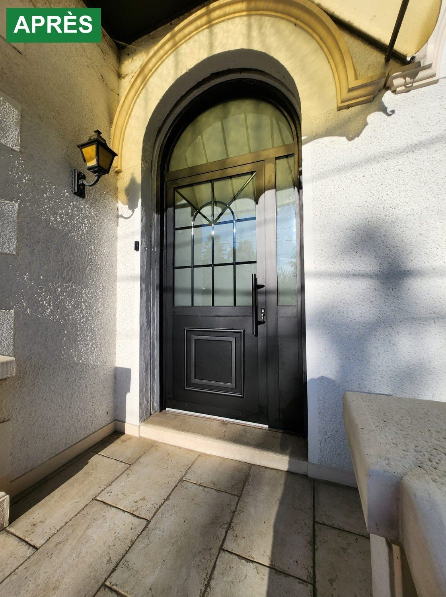
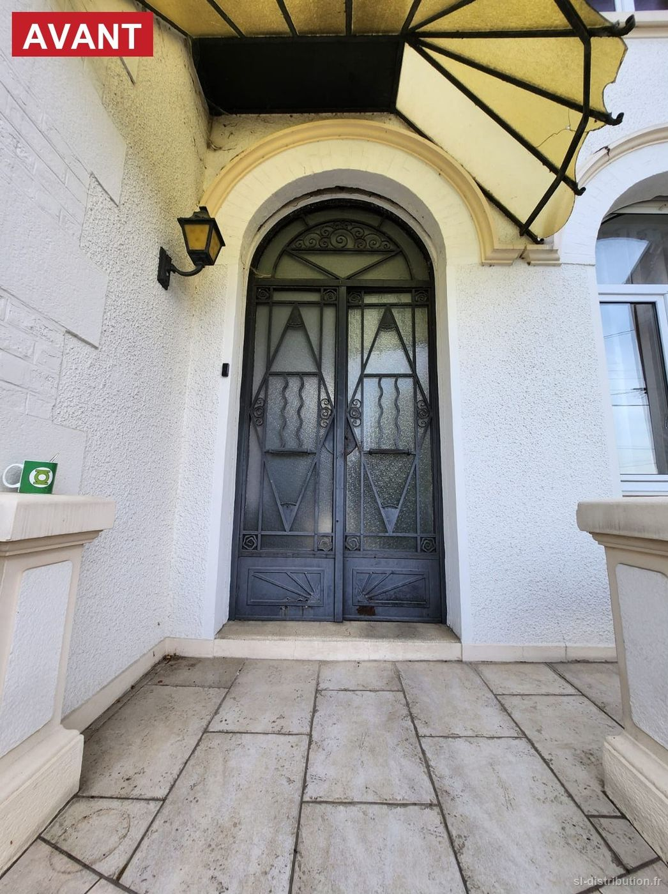
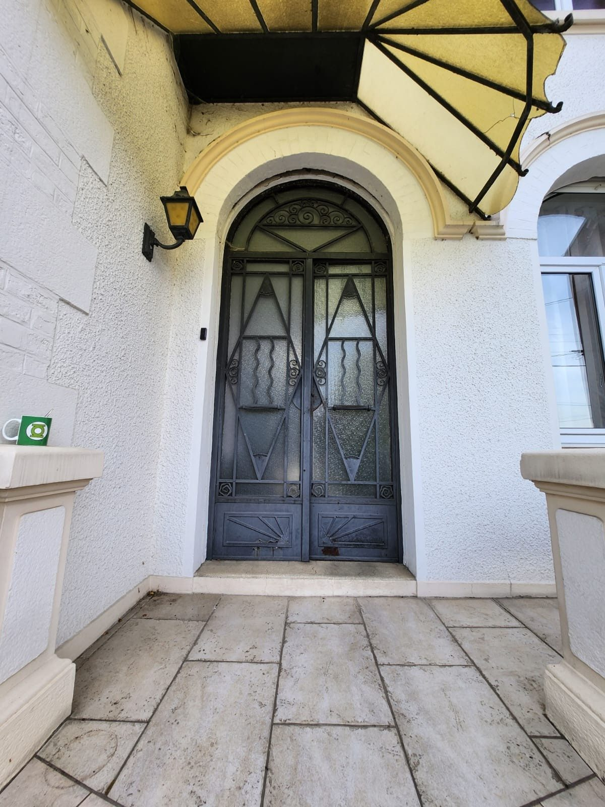

Caudry
La porte d'origine était en métal, très lourde, avec une ferronnerie que plus grand monde ne sait produire aujourd'hui. C'était aussi une passoire : l'air passait par-dessous et l'isolation était inexistante.
À la place, une porte d'entrée aluminium sur mesure, cintrée, trois mètres de haut, laquée noir structuré, vitrage feuilleté satiné, seuil aluminium, et des croisillons dans l'imposte et dans l'ouvrant pour rester dans l'esprit de la façade.
Il y avait aussi une raison très concrète : le passage. L'ancienne porte avait deux vantaux strictement identiques, avec un montant pile au milieu — pour rentrer un meuble, c'est la galère. La nouvelle est dissymétrique, deux tiers un tiers : un large ouvrant d'un côté, un fixe étroit de l'autre. Même tableau, même maçonnerie, et pourtant on passe.
Sur l'esthétique, je ne prétendrai pas qu'on fasse aussi bien que les artisans qui ont construit ces maisons. Sur l'étanchéité à l'air, le confort et la sécurité, en revanche, la comparaison est sans appel. C'est la ligne que je m'impose sur le bâti ancien : ne pas trahir la façade, et apporter ce que l'époque permet.


